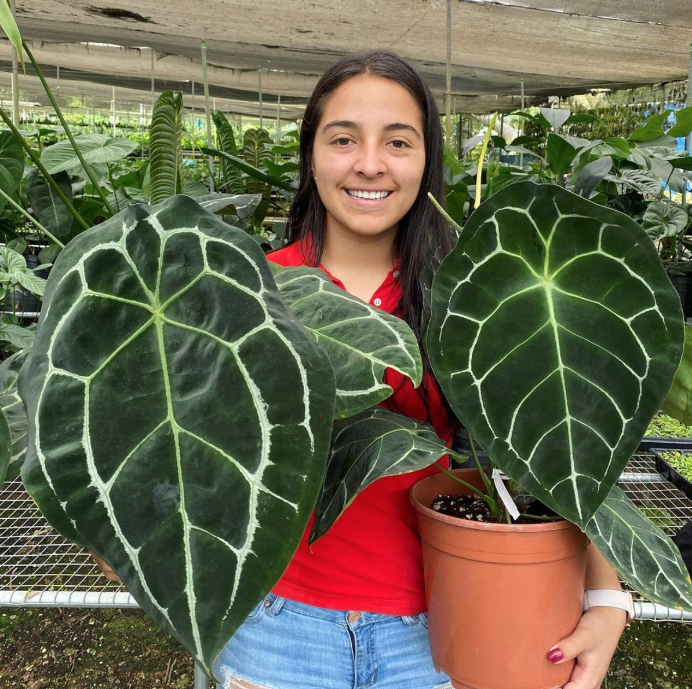
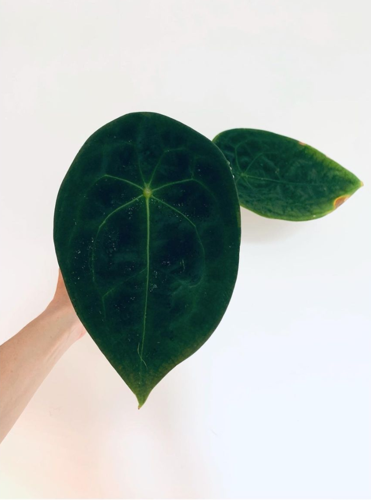

Anthurium Dressleri x Forgetii¶
- Section
Undocumented
Defining Characteristics¶
Forgetii has peltate, closed (or absent) sinus, round petiole and an erect, green spathe. The spadix is light green to yellow green in color but may turn reddish with age. The berries produced on the spadix are dark purple.
The backs of the leaves are notably bumpy, and the leaf is often concave. Sometimes there is a subtle dip where many other Anthuriums would have a sinus.
Variations¶
The variations most universally recognised are “white stripe” (also known as “silver”, “high silver” or “bullet”) and “dark form”.
 Known Hybrids¶
Forgetii is notable for it’s unusually prolific ability to cross with a wide variety of Anthurium species and hybrids.